新家落成時，少白早已在小紅書上選定自己心儀的風格，從畫作的樣式、櫃體的設計與地毯的色澤都有一個雛形。
少白熟捻的在 ChatGPT 上打了幾個字，沒幾秒鐘，跟小紅書上如出一轍的「包豪斯（Bauhaus）風格」就依照家裡的格局，跑了出來。他看著以幾何線條、簡潔造型與實用性為核心的 3D 渲染圖，想像一切就位的模樣。
這些草圖又被少白順手分享到 Instagram 的限時動態，他拖曳一個投票的欄位，讓家人、朋友一起參與討論，來決定哪種顏色、尺寸或搭配最適合自己的生活風格。
沒幾個小時，少白已敲定要購入的款式，「我主要都是上淘寶看價格會不會超出我的預算，如果太貴，我會再看看有沒有平替的版本。」少白仔細瀏覽其他消費者使用產品後的評價，以及買家之間針對商品材質、尺寸、使用方式等實用資訊的問答。
「我現在基本上已經接近完全無法在實體店面買家具了。」少白今年四十三歲，他的消費習慣在同年齡層中相對少見，而對於年近六十的家庭主婦可貝乃來說，更是幾乎難以想像。
可貝乃這輩子買最多家具的時刻就是三十多年前結婚、入住新房的時候，在新竹郊區一間實體家具店購入的整套實木家具。從五斗櫃、床架、餐桌到梳妝台，當時大約花費了二十萬元，那也是娘家給的嫁妝之一。
可貝乃與丈夫當時並沒有請設計師，只是詢問了一些家人與朋友的意見後，就到店面去挑選了。然而三十多年後在佈置新家的時候，把小紅書當作室內設計師早已是許多人的膝跳反應。
尤其是在疫情之後遠距辦公的形式盛行，當在家的時間增加，佈置與擺設上的美感需求逐漸受到重視，一個理想家的模樣也在替換。
小紅書作為一個以影像為主導的社群媒體，也讓空間不僅是生活場域，更成為可被拍攝、展示與分享的視覺內容載體，理想居住空間的定義已由過去強調耐用性與功能性的標準，轉向追求「上鏡度」。
複製貼上一個理想的家
打開小紅書，迎面而來的是一句標語：「你的生活興趣社區」。就像它所強調的，這是一個不斷製造日常內容的龐大資料庫。
「居家室內設計」的主題頁下，跳出的貼文充滿各式各樣的風格標籤：從「奶油風」、「法式輕奢風」、「侘極風」、「Muji 風」，到「多巴胺風」與「ins 風」。小紅書不只是提供靈感，更像是搜尋引擎，用戶不需要專業訓練，只要跟著熱門標籤與模板，就能快速獲取各種視覺範本，複製貼上一個理想的家。
除了風格，小紅書也催生了更多針對特定族群與性格的空間想像，如「#適寵化」、「#適老化」、「#適童化」與「#適懶化」等等。這些標籤因應寵物成為家庭成員、考量高齡者的行動與生活需求，又或是以兒童成長與安全為核心，甚至是為了追求更省力、更便利的生活方式，簡化了複雜的設計考量，讓消費者能夠無痛直接套用模板。
與此同時，大量標有「#滿滿乾貨」、「#不藏私」、「#手把手教學」的內容，有些教你如何免動土，進行牆面大改造，有些則是教你挑選不同色溫的燈泡及不同類型的燈具，來「告別死白光」。以經驗為基礎的分享內容讓用戶不再像過去只能依賴室內設計師，對於家有更多的主導權。
隨著 AI 與全屋智慧系統普及，居家被賦予了另一層期待：不只是好看，還要「比你還懂你」。智慧開關、智慧照明、智慧溫控、智慧家電等整套管家式的系統正逐漸融入日常，並且在小紅書的渲染下，被包裝成一種新時代的生活標配。
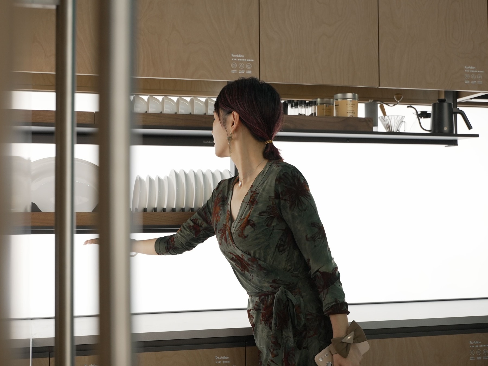
小紅書的平台特色不僅吸引到需要裝修租屋處或作為首購族的年輕用戶，室內設計師林渟堉更提到，四、五十歲左右的女性在與設計師討論室內設計時，也會轉貼小紅書上的相關內容。
隨便放都好看 小紅書的「容亂率」哲學
2025 年 12 月 4 日，Threads 上跳出一則則很像是假新聞的貼文，標題寫著「內政部暫封小紅書一年」。但因為那個「封」字，手法猶如中國限制或封鎖許多國際社群與通訊平台，導致社群上一片哀鴻遍野。沒有人知道內政部什麼時候做出了這個決定，更沒有人知道會禁到什麼程度。
有人在意，「小紅書真的非常多旅遊資訊可以參考」、「我的偶像在小紅書更的圖都超好看」、「我的美甲都是從裡面找圖做的」。因為政府公佈的封鎖緣由是詐騙猖獗，有人則在討論其他的社群媒體，「抖音麻煩一起禁」、「怎麼不封臉書？詐騙一堆」。
目前在台北當工程師的呂映昇是服飾品牌 Paradigm 的創辦人，也是小紅書的使用者，「我上班躲去廁所的時候會滑，那種短暫偷到時間的喜悅很適合看短訊息。」呂映昇當天就得知小紅書被禁的消息，但在觀察幾週後，發現使用上並沒有太大的影響，他也沒有繼續留意相關消息。
呂映昇一開始看到研究所同學有人上課用小紅書看煎牛排的影片，他其實完全不理解這個社群媒體到底有多吸引人，也不認為自己需要來自中國的資訊。直到偶然接觸到小紅書上的穿搭和服裝趨勢，才漸漸被上面的內容吸引。「我喜歡資訊豐富的感覺，有些問題 Google 的搜尋結果可能不好，但在小紅書上就能找到解答。」
畢業兩年，隨著工作和生活上的需求轉變，呂映昇開始關注電腦桌佈置的相關貼文，小紅書演算法便逐漸將推薦內容擴展到室內設計與裝修領域。除了從網路上吸收資訊，呂映昇也深深地被阿媽「民國時期風」的房間所吸引——木質家飾、拱門、雕花與復古色調等元素，呈現中西交融、典雅而帶有時代感的空間氛圍——逐漸形成他對於理想家的視覺想像，而他在台北的第一間租屋處便成為他把想像落地的「MVP（Minimum Viable Product，最小可行性產品）」。
這間租屋處在他剛搬入時，幾乎是毛胚屋的狀態，沒有任何家具和隔間，而廁所的管線雖然都走好了，但卻沒有裝上洗手槽與馬桶。這對嚮往一卡皮箱入住的租客來說避之不及，但對呂映昇來說卻是如獲至寶。
學生時期住宿舍的時候，他曾經也跟著風潮，到無印良品購買一些收納小物，然而令他失望的是，雖然空間變整潔了，但在美感上卻跟「驚艷」沾不上一點邊。對於視覺有極高要求的他，直到看到小紅書上的「容亂率」概念，就立刻吸收成自己的空間設計哲學。
「就像我的書，不一定要擺在書架上歸位，隨便擺一個地方也好看，這就是容亂率。」呂映昇解釋，台灣傳統的裝潢喜歡有大面積的系統櫃，雖然收納空間大，但稍微不整理，就很容易雜亂無章。「我追求的是就算東西多了、雜了，視覺重心還是平衡的。」
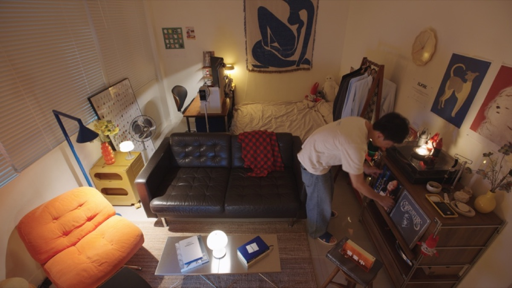
呂映昇的家具組成非常多元，有從 Facebook Marketplace 及 IKEA 買到的沙發、來自台中老家的舊物，像是黑膠唱片機和風扇，也有從淘寶上淘到的幾件產品。
IKEA 是來自瑞典的全球知名家具與家飾品牌，在台灣的第一間分店於 1994 年底開幕，以簡約、實用、平價為核心，而其設計俐落、強調模組化與自主組裝的特色，不只早已是許多台灣人在購買家具時的首選，更讓大眾了解，家具不只是生活用品，還是能負擔的生活風格選擇。而淘寶則把這個概念做到極致化。
呂映昇指著一個日系品牌常見的木櫃，「這是淘寶仿無印良品的款式，原版沒有這麼多顏色可以選擇，配件也沒有這麼齊全。」他提到，雖然淘寶有些配件需要另外預訂，但價格也比較便宜，而且無印良品常態供應的只有層架，並不包含雜誌架，因此淘寶成為了他的替代方案。
淘寶競爭力
「一件在淘寶只賣台幣兩百多元的商品，到了台灣，售價居然可以來到五、六百元。」這對 2020 年還在讀大學一年級的吳資容來說，是一個非常大的商機。當時她甚至會與朋友批貨服飾到蝦皮販售，利用價差賺錢。
「我自己有一點比價強迫症。」既然都是同一間工廠生產，她總希望找到最便宜的價格。「有時候其實只差十幾、二十元，我還是會忍不住繼續比較，直到找到最佳價格。」
身為淘寶六年資歷的用戶，她發展出一套屬於自己的購物準則。她不是選擇直接打開淘寶，而是先逛蝦皮。
吳資容認為，蝦皮更像是一道「過濾器」。台灣賣家已經替消費者篩選過款式與品質，因此她會先在蝦皮找到喜歡的商品，再截圖回到淘寶，以圖搜圖尋找源頭工廠或價格更低的賣家。
在層層把關後，淘寶對吳資容來說，唯一的缺點幾乎只剩下海運的時間。如果商品急著使用，她會直接在蝦皮下單，換取隔天到貨的便利；如果時間充裕，她幾乎都會回到淘寶，因為相同商品往往存在明顯的價差。
她購買的商品範圍也相當廣泛，從服飾、電腦周邊產品，再到居家用品。甚至父親維修汽車需要的零件，都曾經透過淘寶購買。琳瑯滿目的商品一直都是淘寶的核心競爭力之一，但也成了平台新手的阻礙，當一張單人沙發椅有數十萬個搜尋結果時，建立一套自己的「避雷」方法便是當務之急。
吳資容會仔細閱讀買家評價，以及其他消費者上傳的實拍照片，藉此確認商品是否存在色差、尺寸或版型落差。她坦言，因為價格相對便宜，自己對品質本來就有心理準備，只要價格合理，即使最後沒有預期中的好，也不會覺得太可惜。
她也感受到淘寶平台對台灣市場的轉變。首先是在購物流程方面，吳資容認為過去幾年在購買淘寶商品時的便捷度有大幅提升。「早期需要自己找，對訂單編號、追物流進度都非常麻煩。但現在淘寶推出 99 元人民幣到台灣的服務，不同店家的商品可以自動湊單並直接送到家。」
而在服務態度上，早期使用繁體中文詢問商品時，店家不一定願意回覆。如今，不少商家不但回覆速度更快，也更積極處理售後問題，甚至會主動提供折價券或優惠方案。許多電子產品也開始標示台灣規格與適用電壓，商品名稱甚至加入台灣消費者慣用的搜尋關鍵字。
「他們的訊息有時候就會加上『親～』或是『小姐姐』，來讓你覺得有更親切的感覺。」吳資容維妙維肖地模仿著客服人員的口吻。
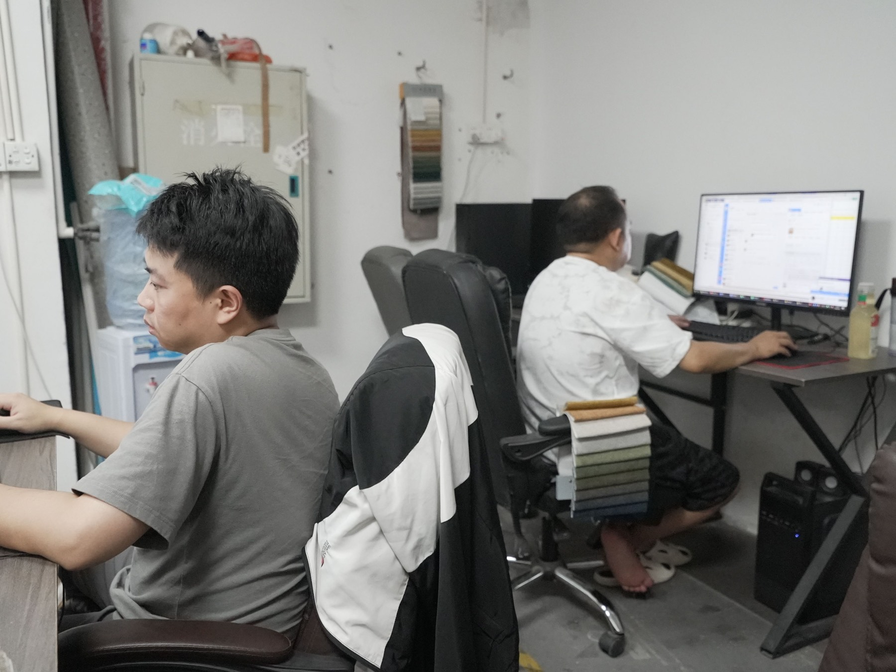
淘寶家具陷阱
提供淘寶家具代購服務的黃正喨也是看上了這個越趨便捷的中國電商平台，一方面賺了價差，另一方面也透過長期的購買經驗，幫消費者把關產品品質。黃正喨還考取了水電相關證照，購買淘寶上的產品，提供顧客黏貼窗戶隔熱紙、更換智慧鎖等服務。
且相較於日常生活用品，家具單價高、價差也更為明顯，因此對許多消費者而言，即使加上運費、代購服務費與安裝成本，仍具有相當誘人的價格優勢。
過去有許多豪宅清潔管理經驗的軟裝設計師 Elynne 也是淘寶的愛用者，「我甚至會特地拍下豪宅客戶家裡的燈具，再回到淘寶搜尋同款。」在實測幾次後 Elynne 發現，在淘寶上都能找得到類似的設計，而且價格便宜許多。「相較之下，台灣家具店能選擇的樣式比較有限，價格也高不少，不一定符合業主的需求。」
不過在淘寶上購買家具吃悶虧不是一般消費者的專利，Elynne 也是在繳學費後才習得一些撇步。「我現在挑家具，絕對會購買評分 4.8 以上的產品，還會事先確認商品的防護方式。」
Elynne 分享一開始的購買經驗，「我曾經僥倖幫業主挑選一幅 4.7 分的掛畫，結果差點大賠錢。那個掛畫比其他家賣的還要更便宜一點，但到集運商那邊就發現賣家只用軟紙箱，而且還沒做防護，外包裝完全爛掉。」
即便有過不好的消費體驗，Elynne 並沒有選擇一竿子打翻一條船。「其實我不覺得淘寶都是爛貨，我覺得是一分錢一分貨，但你要懂得怎麼去挑。淘寶同樣一張椅子從便宜到貴都有，你要了解材質，知道價錢合不合理、賣家 OK 不 OK。」
對於從事相關行業的專業人員有管道了解行情、有本事看懂門道，但消費者的判斷指標少了許多，甚至還有網紅開始推廣跳過淘寶平台，直接到中國廣東省佛山市——上架到淘寶的家具工廠大本營——來購買家具。
近年來，「黑哥」、「孫耀」等活躍於 Facebook、Instagram、抖音等社群媒體的佛山頭部家具買家逐漸竄紅。由於這些買家不僅熟悉家具產地、工廠與供應鏈，也透過社群分享「帶逛工廠、找源頭家具、避坑」等內容，累積粉絲與影響力，進而影響消費者的採購決策，逐漸形塑出「到源頭工廠就能買到超低價家具」的消費觀念。
不滿足於低價 還要破盤價
中國廣東省佛山市的樂從區與龍江區素有「十里家具城」的稱號，前者主要是商家與品牌的實體營銷店面，後者則是負責產製的工廠。家具品牌總經理楊曜在廣州、佛山邊界有一間兩萬平方公尺的工廠，他更形容這裡的家具業是一個產業養活全村，「隨便在路上抓一個人來問，不是做家具，就是做裝修、塗料、建材等等相關產業。」
然而，中國景氣不好，房市受挫連帶整體家具業也受到牽連，而大家為了搶單，整個市場都非常「」。瀏覽淘寶上的網站，不到台幣兩百元，即可擁有單人座的小沙發，價格低到讓人懷疑是不是詐騙。但自從楊曜今（2026）年開始經營社群媒體 Threads 賬號後，他還是收到許多消費者截圖淘寶上的家具，來向他詢問是否能夠購買到更低的工廠價格。
楊曜是在佛山經營家具品牌十六年的台灣人，在台灣有約四年的家具銷售經驗，爾後轉戰佛山市場，目前的商業版圖觸及中國國內、東南亞及台灣。在台灣市場方面，主要對接設計師、家具店、家具工廠還有大型項目，很少有機會直面產業鏈最末端的消費者。楊曜強調，「淘寶家具幾乎已經是最低的價格了，很難找到比淘寶還要更低的價格。」
楊曜認為，現在消費心態非常扭曲，大家都在找最低價，廠商也無所不用其極地壓低成本。「淘寶廠商許多都是用最差的材質，再用批量生產把價格打下來。」一分錢一分貨，這也是消費者要自己承擔的風險。「而且淘寶很多圖片都是美化過的，有些甚至是拿原裝圖片。你拿到的貨，樣式一樣但質感差很多，而且運到台灣還可能缺螺絲或配件。」
實際走訪上架到淘寶的沙發工廠，工廠隱身在工廠大樓的三樓，相較於其他經銷商合作的工廠，看板上並沒有特別標示工廠名稱。楊曜解釋，通常淘寶的傢具廠沒有工廠名，佔地也不大，有時經營不善，工廠主就直接捲款潛逃。「許多人銀行信用評等都是最差的級別，甚至被。」
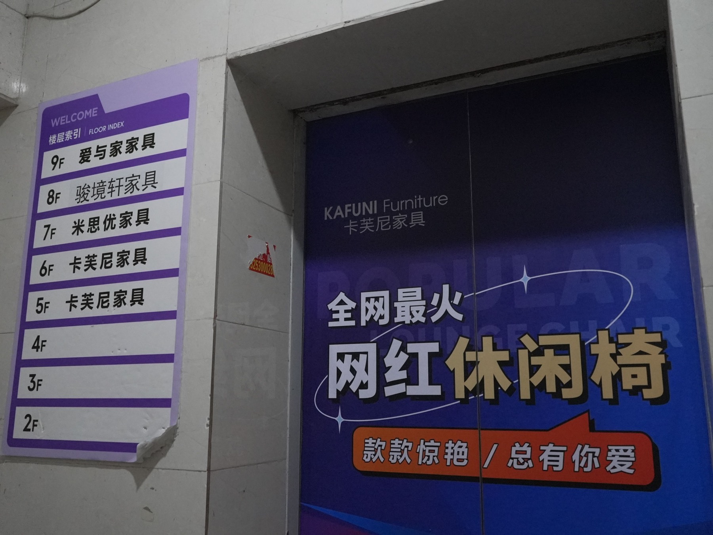
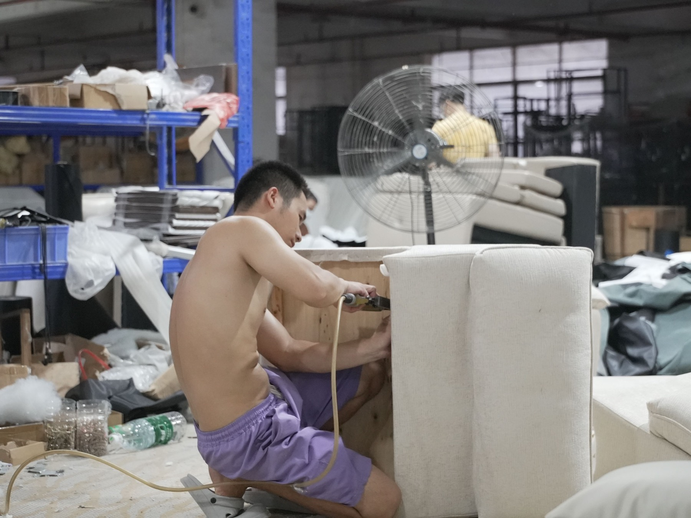
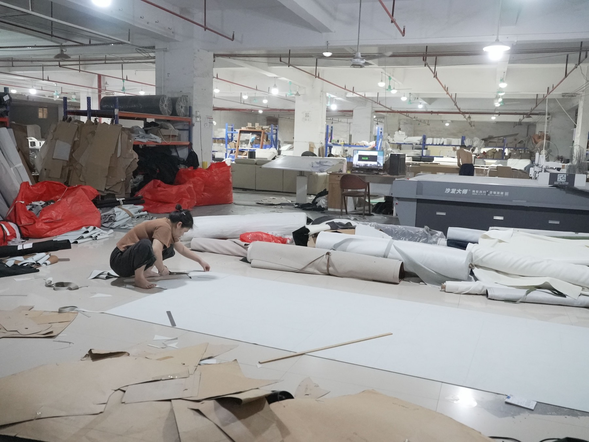
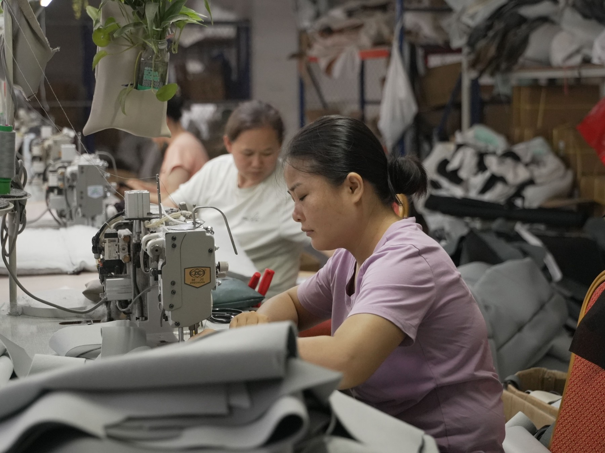
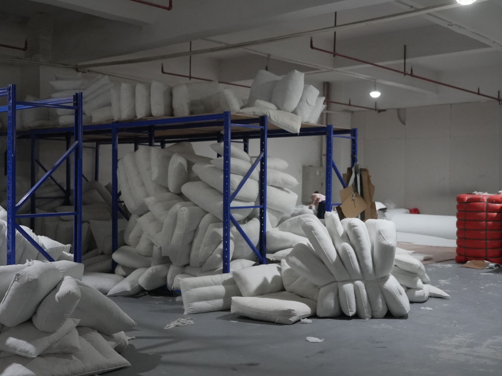
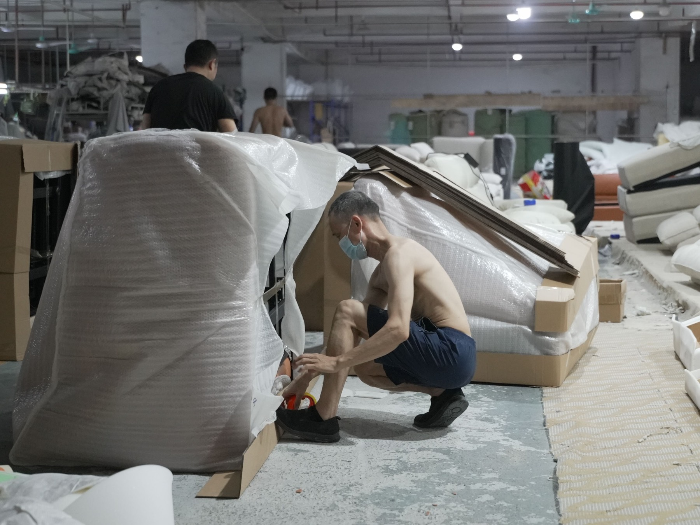
楊曜並不鼓勵一般消費者直接來佛山購買家具。他提到，在佛山若沒有熟悉、可靠的業內人士，很容易踩坑。「家具工廠門檻低，同行削價競爭很嚴重，許多老闆為了金流搶單，但收到錢並不是開始製作，而是買房買車，導致很多客戶下了訂單卻拿不到貨，或者品質很差。」
針對沒有大量家具需求的一般消費者，楊曜給了一個指引——想找便宜貨，就直接到淘寶上選購，但需自行承擔風險。倘若有高級訂製家具需求，到佛山這邊的工廠才有可能有價差。「一套義大利品牌的原裝家具可能要價 100 多萬，但在佛山透過專業訂製工廠，大約十幾萬台幣就能完成。」
復刻版家具，正是佛山家具的另一個特色。
一週復刻張員瑛六百萬元的沙發
大環境驅使同行競爭激烈，而佛山的產業規模則讓一切不可能變成可能。楊曜的個人助理陳諾言提到，韓國女星張員瑛豪宅內一張上看六百萬台幣的沙發，照片在網路上流傳不到一個禮拜，復刻版立刻出現在佛山。
整個家具城有幾十萬家的家具店與工廠，外觀不起眼的樓房裡，可能都在做家具。彼此不只相互競爭，更是相互提防。稍微有資金的公司，會合夥投資一個展廳來展示自己家製造的家具，展廳不僅需要事先預約，確保來者的意圖，拍攝上更是有諸多限制。現場則是由負責接待、介紹商品與協助消費服務的導購留意來者是否使用專業相機以及近距離拍攝單項產品，這都是為了確保自家產品被仿冒的潛在風險。
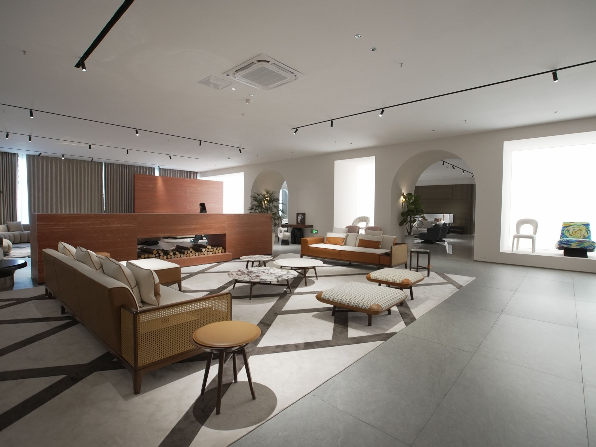
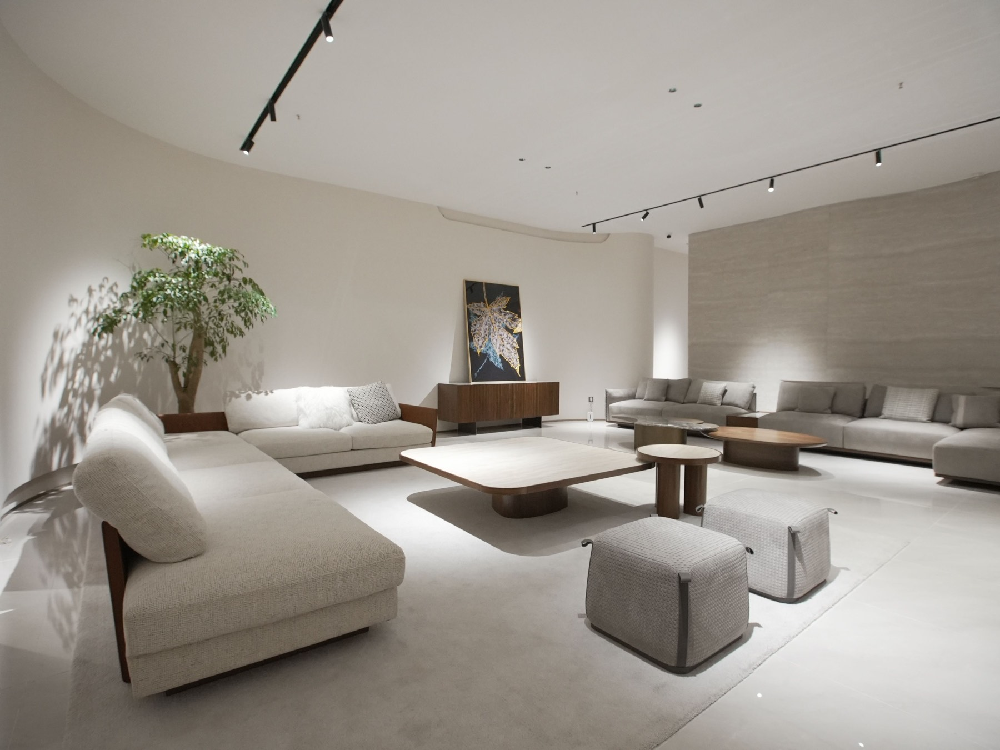
「這個產業就是這樣抄來抄去。」才剛進到家具產業不到一年的 Ian 不以為意的提到。
Ian 在一家海外飯店家具公司當產品經理，業主都是如萬豪（Marriott）集團這類型的全球知名的飯店業者，而他的工作就是負責理解飯店的家具需求，由飯店設計師提供家具設計的圖紙，再和中國家具工廠聯繫、協調，談出一個好的價格，最終由工廠完成。
Ian 隨意點開一個客戶的圖紙，Excel 表格裡頭的欄位非常簡單，主要就是品名、呈現出造型的家具圖片、尺寸以及材質細節，「其實拿去以圖搜圖，就會知道這些都不是原創的設計。」Ian 輕描淡寫的説，大型連鎖飯店一次訂單都是上千套的桌椅，「比起智慧財產權，他們更在乎成本。」
楊曜這幾年也開始有台灣的訂單，他則認為仿製並不代表就是不尊重原創，有時候是為了符合消費者的在地需求。「比如原裝沙發坐墊使用羽絨，但台灣太潮濕，羽絨容易塌陷，我們就會改用絲棉代替。」除此之外，中國與台灣的床墊尺寸也不同，床架尺寸也需要依此調整。
而在民間信仰方面，楊曜也提到台灣人很重視，辦公家具像是辦公桌，尤其需要注意桌面的長度，師傅會避開被認為不吉利的尺寸，選擇落在「吉」的位置。「中國這邊的客戶反而就不怎麼在意。」
此外，復刻版依照布料、坐感、售後服務等，也有不同的價格區間可以讓消費者選擇。
狼性勞動 積極種草
「種草」是中國社群與電商的常見用語，指透過內容、推薦或分享，引發消費者對某項商品的興趣與購買慾望。小紅書經常是淘寶產品種草的管道，許多商家會在小紅書發布貼文，且一併附上淘寶的購買連結，藉此讓消費者在眾多的商品之中，看見自家商品。
然而，小紅書的核心是「筆記（Note）」，強調內容品質與價值，漲粉速度較慢，且無法單靠投廣告買粉。因此這些種草貼文，經常隱身在網紅的貼文之中。
商家或是電商平台會和網紅合作拍攝短影音，擴大市場。透過網紅激起消費者的購物慾，助長了種草的行銷策略，也賦能消費者，以超低價打造屬於自己的空間。
在 Instagram 上擁有近三萬追蹤者的內容創作者吳資容表示，曾經接受過中國行銷公司的邀約，拍攝電商平台拼多多的短影音。而在短影音的選材方面，吳資容即是選擇一些家居小物來開箱。
「中國的創作者擅長對標競爭對手，先研究對手的弱點再進行二次創作或複製成功模板，行銷概念極強。」淘寶母公司阿里巴巴企業指定講師小馬提到。對標帳號是透過分析特定競爭者或市場中的標竿對象，包含其選題、封面、標題及文案結構，來了解市場接受度高、容易快速銷售的爆款，並做出下一個爆款。
內容創作者通常都會選擇固定且擅長的「垂直賽道」，透過聚焦於特定產業、品類或消費族群的細分市場，以達到穩固受眾，而文案中的各式標籤也是為了有效運用過去的成功經驗。
小馬觀察到，因為近年市場競爭激烈，廠商的服務大多變得極度熱情。「阿里巴巴大戰月是大型促銷檔期的前後，是為了爭奪消費者與商家資源而展開的密集競爭期，員工甚至會睡在公司，隨時回覆客戶的尋價。」對比台灣人注重養生的生活方式及工作樣態，中國勞動群體具備強大的狼性。這些人願意早上 9 點工作至晚上 9 點、每週工作 6 天的「996」，甚至是早上 7 點工作至晚上 7 點、每週工作 7 天的「777」，且不在少數。即便是假日，也經常待在員工宿舍。
與其花時間對抗平台規則的不公，「他們選擇默認、順從平台規則，面對也從不浪費時間抱怨，會直接繞路走，重新。」小馬分析道。
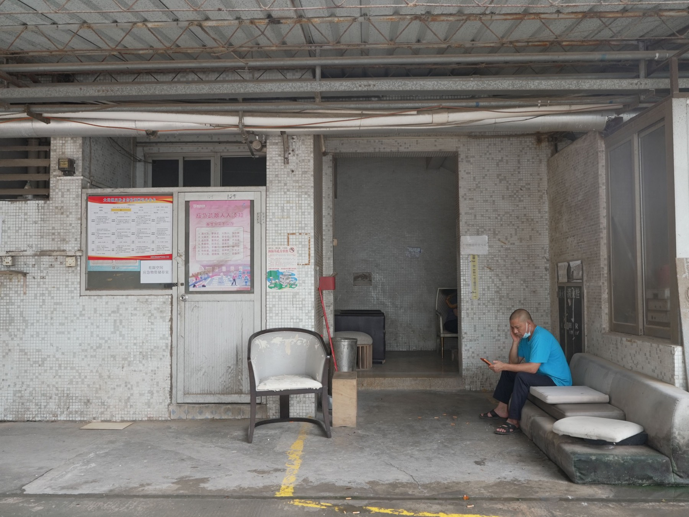
台灣「家具王國」的名號不再
新北市五股區一直都是北部很重要的家具產業重鎮。全盛時期，店面多達兩、三千家的規模，如今只剩下一、兩百間，而光是今年，就已經收了五十間。
新北市五股家具店數量變化
曾經的北部家具產業重鎮，店面數量萎縮約九成
資料來源：本報導採訪整理。原始說法為「兩、三千家」與「一、兩百間」，圖表取區間上限繪製。
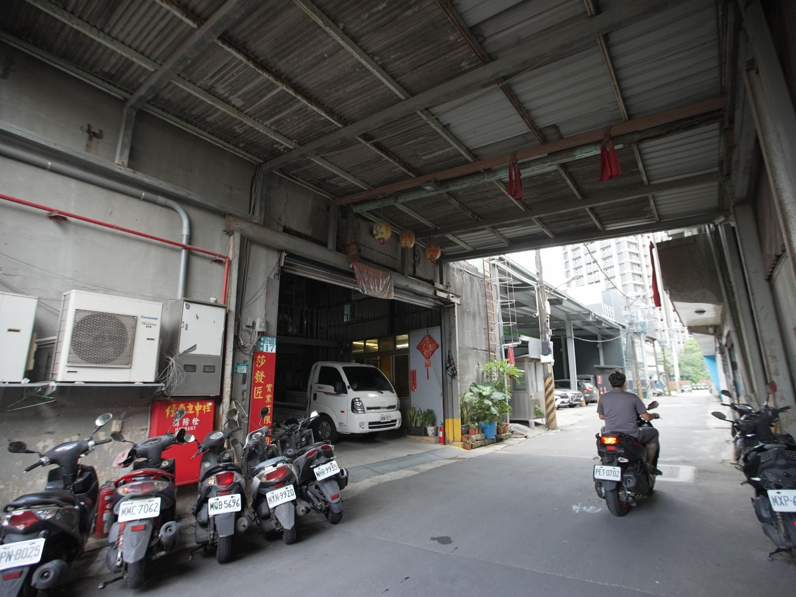
在台灣家具產業最風光的年代，家具不只是日常生活的一部分，更是台灣走向世界的代表，「Made in Taiwan」也成為當時家具產業的重要標誌。
1970 年代，台灣家具出口量躍居全球之冠，「家具王國」的名號由此而生。當時，台灣擁有豐富的木材資源，也在傳統師傅手中的一刀一鑿中，累積了深厚的木作技藝。
隨著全球市場對家具需求增加，台灣也搭上國際分工的浪潮，工廠裡逐漸成形的現代化生產線，逐步建立起完整的外銷代工體系，並在外銷製造找到了一條新的道路。
1990 年代，東南亞與中國大陸的低成本優勢逐漸浮現，且台灣的環保法規越趨嚴格，全球家具的產業版圖大規模動盪。師傅轉行、工廠遷往海外，台灣「家具王國」的美名也退去昔日的榮景，現在還能夠屹立不搖的傳統家具行，皆是歷經一波三折的轉型。
家具行業務陳慶祥認為，中國對台灣家具產業的影響大約始於十年前，早期海運需花費二至三個月，現在已經縮短至約一個月，消費者甚至可以直接在網路上提供設計圖讓中國工廠施作。
不只中國因素，近年傳統家具行在網路上能見度不足，漸漸的在年輕顧客中失去吸引力。經營二十餘年的在地家具行總經理黃振昌則表示，因為價格、品質與售後服務的差異，中國與台灣的產品具有市場區隔，因此影響他們最大的，其實是有經營線上店的在地家具行。「像是 AJ2、沙發先生、棉豆腐等這些年輕品牌，每月雖然投入 50 萬以上的高額廣告費來塑造形象，但實體店面的租金與人事成本相對降低，且能吸引全台灣的客戶。」
黃振昌表示，要走出困境最好的方式就是全面數位化。將所有的商品皆拍照、上架到網路上，且價格透明，讓消費者能夠安心選購。
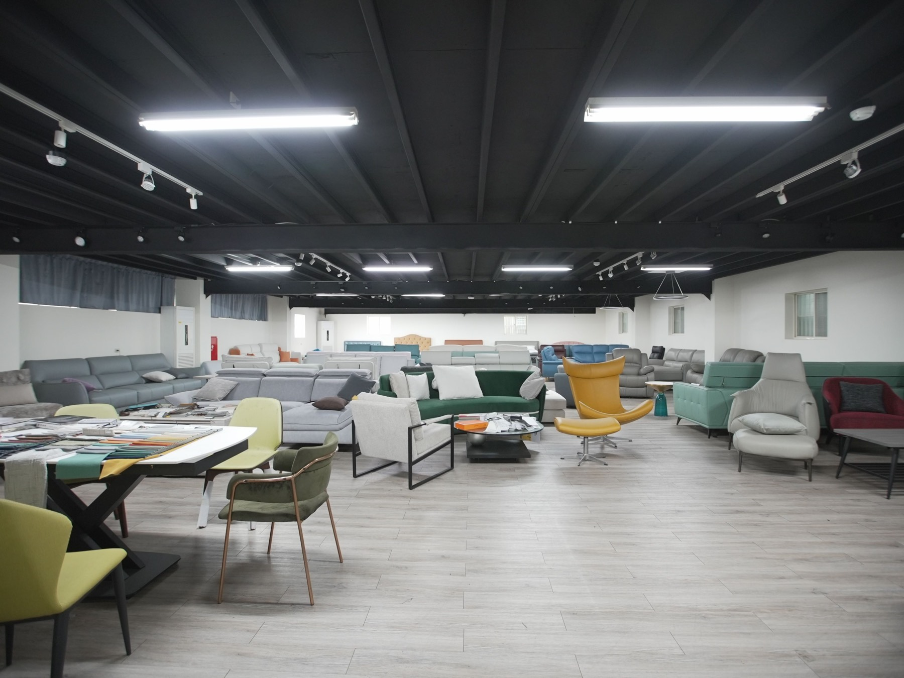
實際走訪五股的五間家具店，定錨小家戶常見的兩人座沙發，價格從六千到一萬六千元都有，但顧客往往無法清楚得知產品差異。這也是顧客在逛實體店面時經常面臨到的問題——深怕自己買貴了，但又擔心便宜的產品品質差。由於不了解行情，因此寧願選購能在線上看到其他顧客評價的線上店，有使用經驗可以參考，買起來也比較安心。
然而全面數位化勢必有新的支出。經營 35 年的五股家具品牌「GAGU 北歐家具工廠」於去年七月無預警停業，不僅傳出欠薪爭議，也爆出因轉型需求，固定營運成本大幅增高，然而整體市場需求不足，導致金流出現危機。
有些家具行的店面是自己的土地，像是板橋四川路的家具街、台北通化街，因為沒有立即財務危機，轉型也沒有到刻不容緩的程度，然而如同溫水煮青蛙，整體家具產業不斷蕭條。
專業再定義 設計思考回歸本質
小紅書品質參差不齊的內容，讓已任職 28 年的資深室內設計師何明勳也表示「深受其害」。
小紅書讓用戶得以獲取更多關於室內設計的內容，然而這樣的賦能，卻也容易讓人誤以為這些內容降低了技術門檻，因而向室內設計師提出許多不合預算或天馬行空的裝潢要求。
何明勳解釋，室內設計的四個階段包含「結構工程」、「裝潢工程」、「裝飾工程」、「建議工程」。每個工程還會再細分成數個工班，例如泥作拆成砌牆、防水、地坪、貼磚，鐵鋁窗拆成鐵件、鋁窗、鐵門等等。何明勳說明了第一線的狀況，「總共超過 20 個工種、涉及數百人的室內設計案子，並不是一則短影音就能夠取代的專業。」
室內設計公司設計總監德哥也提及，小紅書上的內容多屬理想概念，在台灣法規或建築結構下往往無法執行。「像是小紅書上面關於砌牆的影片，在台灣完全不合法，任何動到房屋結構的變更都必須經過專業評估，甚至建築師也不見得精通結構計算，細節需要結構技師精算水泥磅數與鋼筋承載量。」
室內設計的流行走向雖然總是跟著國際趨勢走，但如何落地卻是很在地的專業。
有些用戶難以辨別這些內容的專業度，因而以樣本數量的多寡來判斷設計師的專業度，進而產生對於專業的不信任與不尊重。在 Threads 上有位發文者表示，自己看過許多小紅書上的裝修設計，「不得不說，大陸人如果要來搶台灣人的飯碗，大概有 80% 的人會被淘汰。」
貼文下的留言區卻見其他網友補充，發文者附上的室內設計照片原圖來自於歐洲的室內設計公司，明顯是未經標示的照片挪用。這也反映了小紅書上的盜圖問題。
有些帳號主要是擔任「搬運工」的角色，將中國網域上搜尋不到的內容分享到小紅書上。目的或許是純粹分享個人喜愛的風格，又或許是有意識地盜圖。輕則以隱晦的方式描述資料來源，像是將來源出處放置在不顯眼的角落，重則將他人的設計作品歸功於己。
中國與台灣在室內設計領域的專業用詞有許多不同，在實務場域也是另一個溝通上的隱形成本。
室內設計師張寧提到，過去在與業主溝通時，曾遇到對方希望使用一種名為「柔光磚」的磁磚。然而，這種磁磚在台灣其實並不存在，「柔光磚」只是小紅書上對某種類型磁磚的流行稱呼。張寧表示，與業主爭論並非設計師的本意，因此在充分了解對方需求後，她選擇改用台灣具有相似質感與特性的磁磚來達成效果。
風格雖然是大多數外行人透過社群媒體理解室內設計的敲門磚，但在大學室內設計系的訓練上並非如此。室內設計師黃孝蓉則提到，「對一個設計師講風格的時候，其實我們是陌生的。」學校的課程並不會歸類不同風格來教學生理解設計，而是回歸「本質的需求」。
「如果我是一個要設計給一家三代同住的房子，我會思考大家要怎麼在同一個空間裡既有互動、相聚的時候，又能保有各自的獨立空間。從這樣的需求出發，去發展整體設計。」
黃孝蓉認為室內設計比較像是一種「創造空間體驗」的過程，而不只是表面上看到的材質、色彩或視覺效果。人們在這個空間裡的感受是支撐整個設計的核心，所有的材質、光線、動線，都是為了實現這個「空間體驗」而存在。
小紅書上的許多用詞乍聽之下，像是專業設計的延伸，但更多時候是平台為了流量而衍生的標籤。
「拔草」之後 精緻家的幻滅
相對於「種草」，「拔草」則是指消費者受到影響後實際下單購買，滿足慾望的行為。戴悅鈴也有過一些拔草的經驗，但小紅書上的「隨時跑路風」卻成為她重新思考居家需求的契機。
這種風格主張「家應該能夠帶得走」，拒絕過度裝飾與佔據空間的物件，有些甚至連桌椅都不購入，將矮櫃當作桌子、人則是直接坐在地板上，可說是一種極致的極簡主義。
極簡主義本來就是戴悅鈴所追求的室內設計風格，但她並沒有致力於往「隨時跑路風」這個光譜上前進。為了複製出具有「」的家，戴悅鈴一開始大量瀏覽相關貼文，但豐富的資訊並沒有讓她逐步達成理想的樣子，反倒增加了不少壓力，「你要花很多錢買很多東西，這完全違背了我喜歡極簡主義的初衷。」
不僅如此，戴悅鈴還發現很多精緻的博主皆是使用相同的套路——使用類似的家具與陳設，並且將瀏覽者導向賣家的商場。這種「看似分享，實則帶貨」的手法，讓她漸漸失去對這些貼文的信任度。而分享「隨時跑路風」這類內容的創作者大多為大學生或素人，他們的生活實踐與真誠分享，反而讓戴悅鈴覺得更具參考價值。
戴悅鈴認為，「隨時跑路風」提醒人們不必追求精緻擺設，又或是被消費導向的審美綁架，「你的家不應該是可被帶貨的東西。」
著有《我決定簡單的生活》一書的日本作者佐佐木典士認為，網路時代下，人類大腦塞滿過多不必要的資訊，又太過在意他人的眼光，將精力聚焦在追求物慾與管理雜物上，長期耗費心力享受短暫的快樂，難以察覺真正重要的事物，而感到厭煩，也成了極簡主義的開端。
佐佐木典士在書中寫道，「這樣的趨勢不是單純的突發奇想，或嚮往不同的生活型態，而是基於更務實的原因。」
琳琅滿目的資訊是商業主義下的產物，而極簡主義則是對於商業主義的回覆，奉行極簡主義的室內設計則是對於這種生活哲學的實踐。然而極簡主義經常與斷捨離的「幸福感」掛勾，因此成為一種行銷手段。
商家利用這種理念，打著降低物慾的口號，實則極簡主義延伸的消費陷阱。在淘寶的搜尋欄上打上「極簡主義家具」，搜尋結果卻是無窮無盡，滿是諷刺。
即便如此，淘寶對少白來說，仍是個走過低潮的陪伴。
曾經，少白是個追求跑車與名牌的人，但在汲汲營營的過程中，卻一點一滴的侵蝕了他的心理健康。然而淘寶的消費型態，就此顛覆他對於快樂的想像。「原來這樣的小錢也可以帶來這麼大的滿足感。」少白在視訊的另一頭，把玩著一副造型時髦的太陽眼鏡。
那副太陽眼鏡不到台幣二十元，帶來的愉悅卻完全不亞於上百萬的名牌車。
而小紅書截至目前為止，手機版仍可直接下載並正常使用，但在電腦頁面上，斗大的一行字跳出：「此網域已經遭到內政部警政署刑事警察局封鎖。」